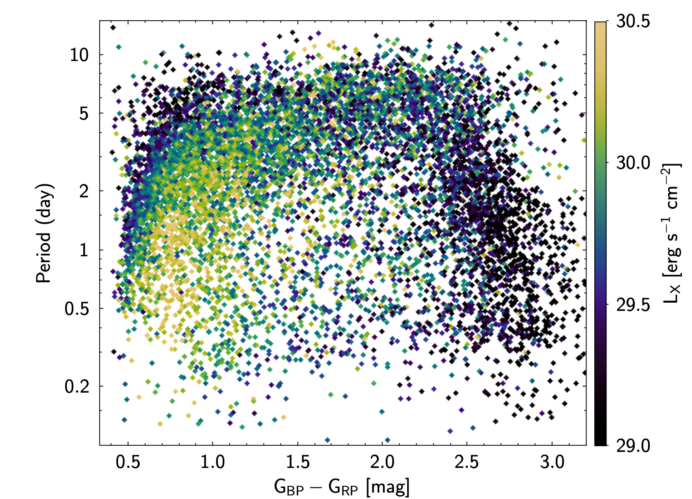
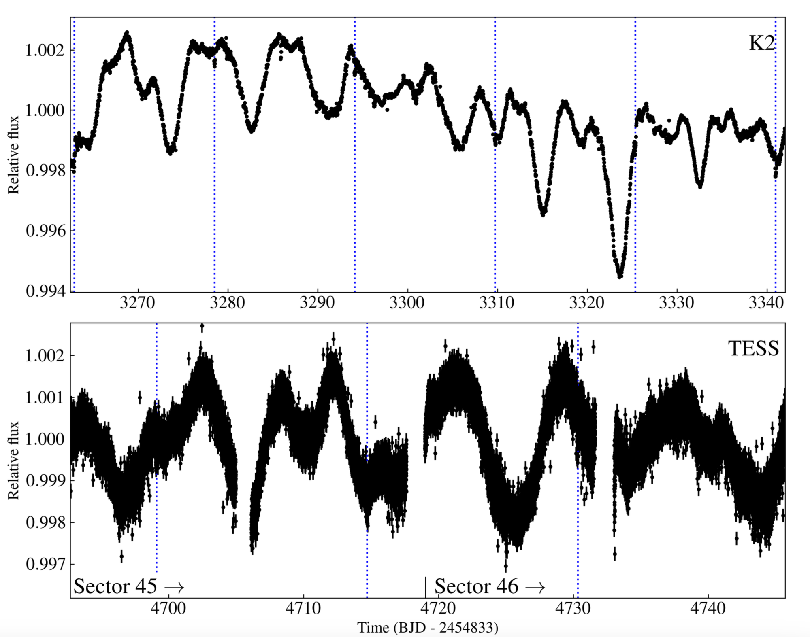
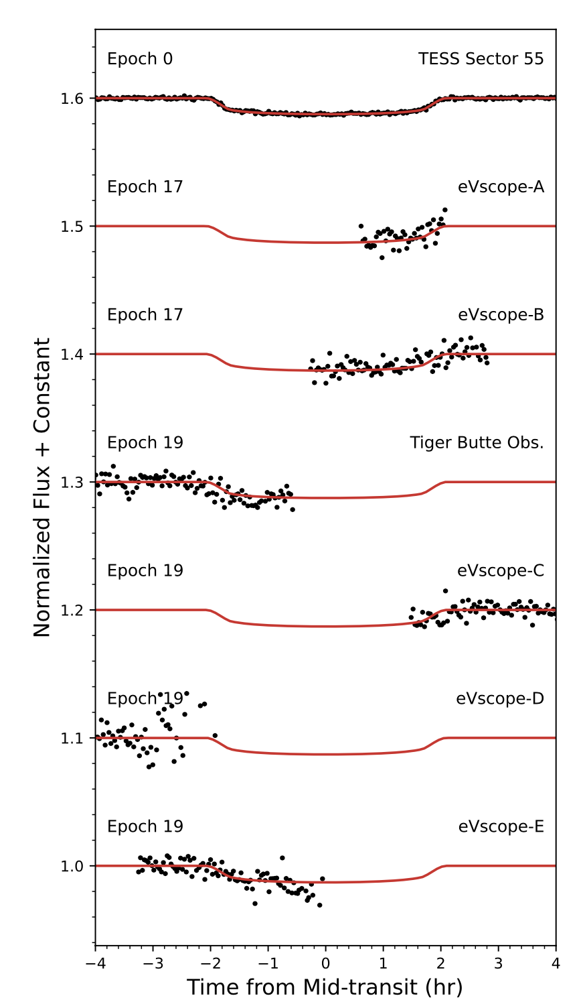

Welcome TESS followers to our latest news bulletin!
This week, we are looking at three recent papers from the archive. Enjoy!
The evolution of stellar X-ray activity and angular momentum as seen by eROSITA, TESS, and Gaia (Stassun & Kounkel 2024) :
X-ray activity and stellar rotation are critical calibrators for constraining stellar ages. Young stars typically exhibit strong X-ray activity and short rotation periods that evolve with time such that the former decreases in strength as the stars spin down. Stassun & Kounkel (2024) present a detailed analysis of a large sample of F5V-M5V stars with known X-ray activity, rotation periods, and ages, utilizing data from eROSITA, TESS, and Gaia. The authors investigated 8,267 stars with effective temperatures between 3,000 and 6,700 K, detected periodic variations in TESS Full-Frame Image lightcurves in the range of 0.1-20 days, X-ray luminosities between 1027.8 and 1031.5 erg/sec, ages between 3 and 500 Myr, and distances of up to 3 kpc. Additionally, the authors estimate the corresponding stellar radii and masses, and derive the respective angular momentum assuming simple solid body rotation. Stassun & Kounkel (2024) argue that the correlation between the rotation period, the X-ray luminosity, and the stellar color of the target sample show the expected “horseshoe shape”, with the older stars being typically slower rotators and vice versa, and note that at a given effective temperature, the younger the star is the stronger the X-ray luminosity (see Fig. 1). Unexpectedly, the authors find that the correlation between the X-ray luminosity and the angular momentum is simpler than the correlation between the X-ray luminosity and the rotation period. Thanks to data from TESS, Stassun & Kounkel (2024) were able to empirically constrain the rotationally-driven X-ray activity for the largest to date sample of F5V-M5V stars.
A low-mass sub-Neptune planet transiting the bright active star HD 73344 (Sulis et al. 2024) :
Sub-Neptunes are planets with radii between 2 and 4 REarth, residing in the transition regime between rocky planets and gas giants. Interestingly, there are no such planets in the Solar System even though they represent a large fraction of the overall planet population. Sulis et al. (2024) present the discovery and characterization of HD 73344 b -- the latest addition to the family of sub-Neptunes -- based on data from TESS, K2, OHP, Keck, and Spitzer. The planet was initially detected as a candidate in K2 data, where it produced six transits. TESS observed HD 73344 at 2-min cadence in Sectors 45 and 46, where the planet produced three transits (see Fig. 2); Spitzer observed one transit in 2019 August 9th. The authors obtained precise radial velocities from SOPHIE and HIRES, found that the dominant RV variability is due to stellar activity, and noted that the rotation period is close to the orbital period of the transiting planet. To determine the physical and orbital parameters of the system, Sulis et al. (2024) incorporated all the available data into the PASTIS software. The authors determined that the host star has a mass Mstar = 1.2 MSun, radius Rstar = 1.2 RSun, effective temperature Teff = 6220 K, metallicity [Fe/H] = 0.18, and rotation period of 9.1 days. The planet has a mass Mp = 2.9 REarth, mass Mp = 3 MEarth, and orbital period of 15.6 days. Sulis et al. (2024) also argue that there is an additional periodic signal present in the radial velocity data suggesting the presence of a second, non-transiting planet with M3sini = 116 MEarth and P3 = 66.45 days. The high-precision photometry from TESS helped confirm the sub-Neptune HD 73344 b, first detected by K2 and a potential target for atmospheric characterization with JWST and/or ARIEL.
Confirmation and Characterization of the Eccentric, Warm Jupiter TIC 393818343 b with a Network of Citizen Scientists (Sgro et al. 2024) :
Warm Jupiters are giant planets with masses greater than 0.25 MJup and orbital periods in the range of 10-100+ days, corresponding to semi-major axes of ~0.1-0.5 AU. These planets inform our understanding of the formation and evolution of hot Jupiters (P < 10 days), and are also linked to the population of long-period Jovian planets. At the time of writing, there are 27 confirmed warm Jupiters, all discovered from TESS. Due to the relatively long orbital period of warm Jupiters, compared to the duration of a single TESS sector, there are many single-transit candidates. Sgro et al. (2024) present the confirmation and characterization of the warm Jupiter candidate TIC 393818343 b, utilizing TESS data, spectroscopic observations, and photometric follow-up from citizen scientists with the Unistellar Network and Exoplanet Watch projects. TESS observed the target at 2-min cadence in Sector 55 and detected a single transit on 2022 August 19th, consistent with a long-period giant planet. The authors combined the TESS data with radial velocity measurements from Keck and Lick observatories to predict future transit windows, and initiated a follow-up photometric campaign performed by citizen scientists. The campaign resulted in the detection of two partial transits, one on 2023 May 23rd and another on 2023 June 24th (see Fig. 3). Combining all available data, the authors modeled the system with EXOFASTv2 and obtained an orbital period P = 16.25 days, eccentricity e = 0.61, planet mass M = 4.3 MJup, and planet radius R = 1.1 RJup. Thanks to TESS, Sgro et al. (2024) were able to confirm and characterize the most eccentric warm Jupiter discovered from the mission – TIC 393818343 b.

Fig. 1: Taken from Stassun & Kounkel (2024). TESS-measured rotation period as a function of the eROSITA-measured X-ray luminosity and the Gaia stellar color for a sample of 8267 F5V-M5V stars. The expected “horseshoe shape” is readily seen.

Fig. 2: Taken from Sulis et al. (2024). Lightcurves of HD 73344 from K2 (upper panel) and TESS (lower) panel, highlighting the stellar activity and indicating the transits of the sub-Neptune plane (vertical dotted lines).

Fig. 3: Taken from Sgro et al. (2024). Photometry of the warm Jupiter TIC 393818343 b from TESS and ground-based follow-up observations obtained by citizen scientists.